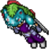
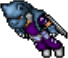

Um mestre na arte da criação de roupas e objetos, o jogador terá a capacidade de criar vários itens decorativos para enfeitar casas, bem como roupas para jogadores e addons para Pokémon. Além disso, também é capaz de criar Toys exclusivos da terceira e quarta geração, Pokémon Figures e Pikachu Cosplay Figures, sendo uma profissão bastante lucrativa. Estilista é a profissão ideal para os jogadores que gostam de colecionar itens.
Tornando-se um Estilista
Para entrar nesta profissão, você deverá falar com a mentora Shae. Ela pode ser encontrado ao norte do Trade Center, junto com os mentores das outras profissões. Tornando-se um Estilista, você poderá usar a mesa de trabalho que está logo atrás de Shae (Stylist Workshop E) para criar suas primeiras decorações.
Primeiros passos
O primeiro passo, assim como nas outras profissões, é verificar os itens que podem ser feitos com skill 0. Nesse caso, são algumas mobílias básicas para as casas ou o XP Plank.
Dicas:
- É uma boa ideia caçar Pokémon que podem fornecer seus ingredientes. Fique atento a itens que podem parecer descartáveis, como Wool Balls, pois eles são utilizados na receita de praticamente todas as Outfits de nível baixo e intermediário;
- Tome cuidado ao comprar ingredientes no Market, pois se pagar caro demais, pode acabar tendo prejuízo mesmo após a venda da sua criação.
Coleta de recursos
Diferentemente das outras profissões, o estilista utiliza dois recursos como receita para a produção de seus itens, a saber:
- Drawing Book: Item utilizado para desenhar Pokémon derrotados a fim de obter o recurso Style e Fashion Points, material utilizado principalmente na fabricação de Addons e Outfits.
- Woodcutter's Axe: É um machado utilizado para cortar árvores e obter logs (madeira), que é utilizada na produção de objetos decorativos mais pesados, como móveis, camas e Big Figures.
Discas:
- Ao utilizar o Drawing Book, sempre tente matar muitos Pokémon juntos, pois é possível desenhar todos de uma só vez;
- Procure um lugar de caçada que tenha bastante árvores (tree), assim você poderá upar seu level e coletar recursos ao mesmo tempo.
XP Banners
Logo de início, os Estilistas vão ser introduzidos à mecânica do XP Banner, que são uma espécie de bandeira que aumenta a experiência recebida ao derrotar Pokémon, com uma grande área de efeito. Essa bandeira concederá um bônus cada vez maior de acordo com o Rank do Estilista que a criou, podendo chegar a um bônus de 60% de experiência no último Rank. A grande vantagem em criar os XP Banners é que, além de aumentar a skill com um item de grande utilidade, o jogador necessita apenas de dinheiro e materiais de coleta para produzí-los, sem se preocupar com qualquer item específico.
Dicas:
- Os Banners possuem um grande alcance, mas eles devem ser posicionados com inteligência, de preferência em algum lugar que abranja a maior parte da rota que o jogador pretenda fazer;
- Os Banners podem se acumular com o Held Item X-Experience, possibilitando ao jogador bem equipado fazer uma experiência bem superior a todas as outras profissões em uma caçada.
Lucro
Existem diversas formas de lucrar sendo um Estilista, inicialmente o jogador pode lucrar bastante fazendo addons e Outfits para vender no mercado. Conforme for evoluindo sua skill, poderá produzir cada vez mais roupas interessantes, aumentando seu lucro.
Conforme for se tornando mais experiente, o Estilista irá produzir diversos móveis que serão muito requisitados por aqueles jogadores que querem decorar suas casas. Não obstante, os Estilistas ainda podem comercializar um item chamado Builder Kit, que tem a funcionalidade de mudar a aparência dos pisos das casas!
Também podem ser produzidos utilitários como o Fashion Shoes e Fashion Heart, que trazem bônus excelentes para qualquer jogador que os utilizarem.
Dica: Estilista é a profissão que produz a maior quantidade de itens no Workshop, guarde todo item dropável, principalmente aqueles obtidos de Pokémon que poucos costumam caçar. Praticamente todo item dropável atualmente possui ou possuirá alguma utilidade para alguma profissão, ainda mais para os Estilistas.
Charizard Outfit
Venosaur Outfit
Blastoise Outfit
Exclusividade
Os Estilistas são capazes de utilizar a Tailoring Machine, uma máquina exclusiva onde apenas os estilistas têm a liberdade para criar uma ampla variedade de Addons Pokémon.
Os Estilistas são os únicos que podem fazer e usar: Os XP Banners, Roller Skate (Roupa de locomoção), Diving Suit (Roupa de mergulho), Sandboard Gear (Mobilidade na areia) e Snowboard Gear (Mobilidade na neve). Sendo a Diving Suit, Sandboard Gear e Snowboard Gear levemente superiores em relação as convencionais.
Pagina Principal